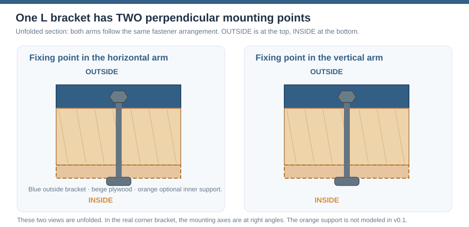
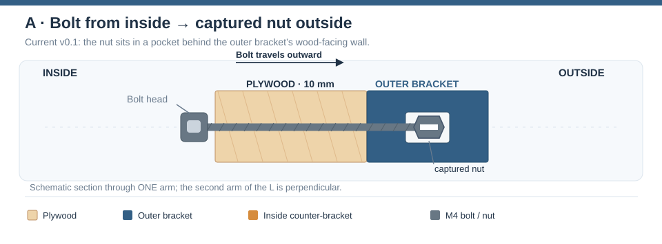
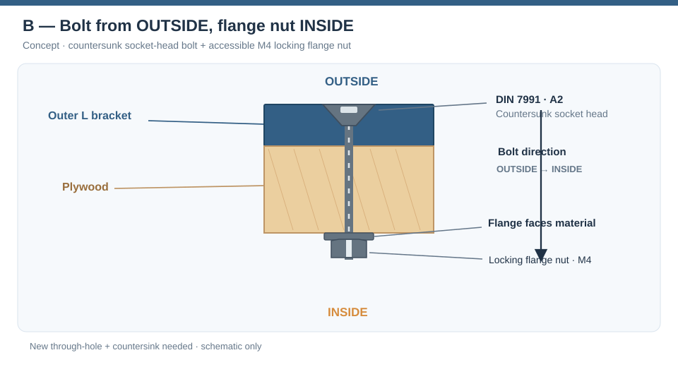
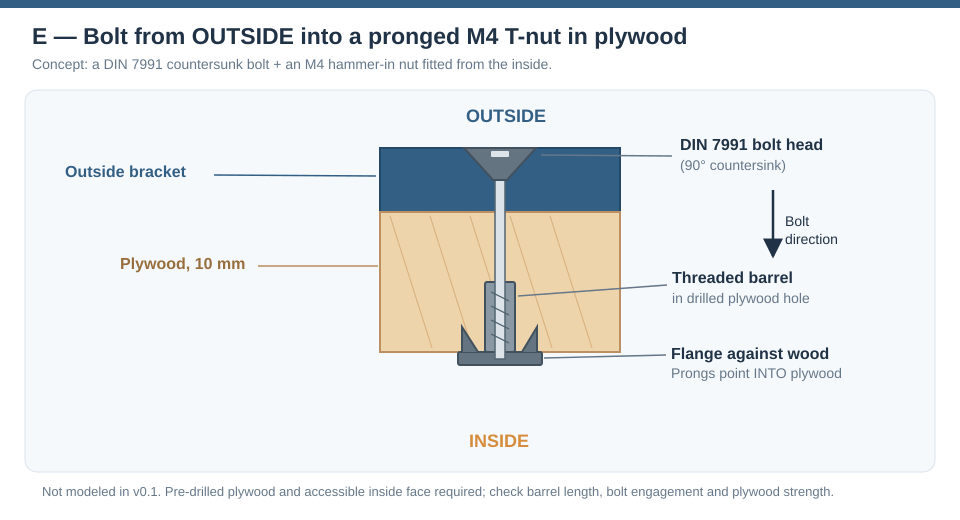
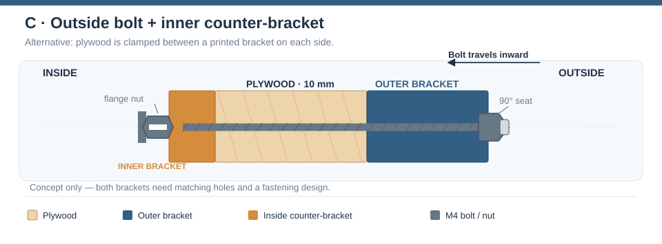
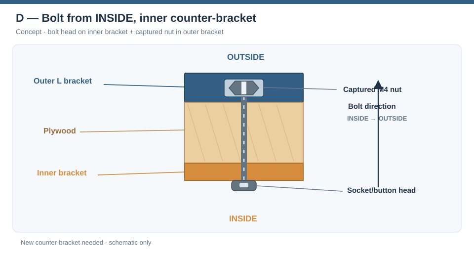
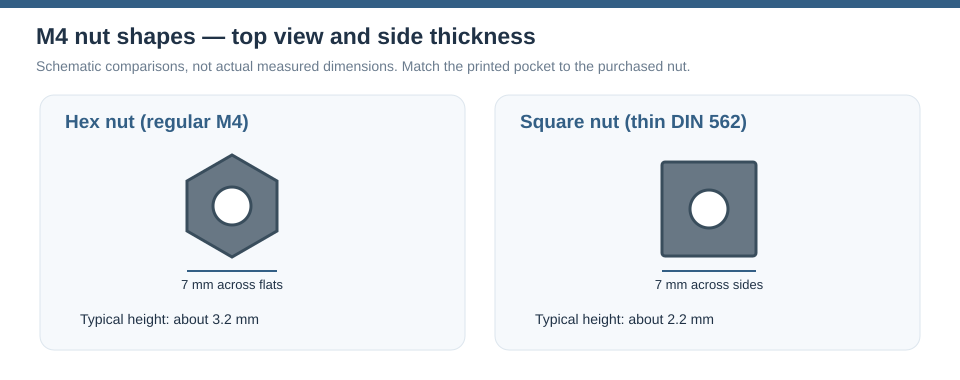
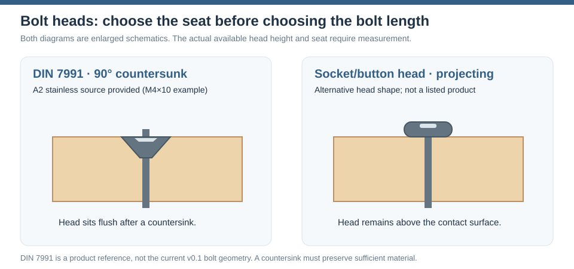

Corner bracket — mounting options
The bracket joins two 10 mm plywood panels from the outside. The main choice is which side the M4 bolt enters from and where the nut sits. A second, optional bracket on the inside could clamp the plywood between two parts.
These are design alternatives, not all features of the current printable model. The v0.1 OpenSCAD model currently implements an inside-to-outside bolt and a captured nut inside the outer bracket. Do not assume that another arrangement is already printable.
The cross-section drawings below illustrate one arm of the outside L bracket. All stacks run vertically: OUTSIDE at the top, INSIDE at the bottom. The second arm is perpendicular and uses the same bolt arrangement. They are concept sketches, not dimensioned manufacturing drawings: the bracket thicknesses, head geometry and clearances are schematic. Blue is the outside bracket, orange is an optional inside counter-bracket, beige is plywood and grey is M4 hardware.

The overview is an unfolded section of the two perpendicular mounting points in the L bracket. Both are shown from outside (top) to inside (bottom), for easy comparison; the actual bolts are at right angles in the assembled corner. The orange counter-bracket is optional concept geometry, not part of the current model.
Which side receives the bolt?
The diagrams below show the stack through one arm of the L bracket. The same principle applies to the other arm, which is at right angles.
A — Bolt from inside, captured nut in the outer bracket (current design)

The bolt passes through the plywood from the inside and screws into a nut held inside the outer bracket. The nut is inserted through the bracket's wood-facing access window; a separate printed plug covers the window. Because the nut cannot rotate, installation only requires access to the bolt head on the inside.
This is convenient when the outside should have no visible screw head. It is also the least disruptive option because the v0.1 CAD already includes the nut pocket, access window, bolt hole and plug.
B — Bolt from outside, loose or locking nut on the inside (alternative)

This is the bolt-from-outside, nut-on-inside option: the bolt enters through a 90° countersink in the outer bracket (a DIN 7991 socket head), crosses the 10 mm plywood, and is secured by an accessible M4 flanged nut on the inside. The flange faces toward the plywood so it bears against the clamped material, never away from it. The nut is held with a wrench while the bolt is tightened.
This needs a new CAD variant: the current outer bracket has a closed outside skin and a blind bolt-tip hole, not a clearance hole and countersink for a bolt entering from the outside. Also verify that a countersink leaves enough printed material around the head.
E — Bolt from outside into an M4 inslagmoer in the plywood (alternative)

A pronged T-nut (Dutch: inslagmoer) is another way to avoid a loose hex or flange nut on the inside. Drill a suitable hole through the plywood and install the T-nut from the inside: its flange lies against the inside face of the plywood, while its prongs point into the wood. The threaded barrel extends into the drilled hole. The M4 bolt enters from outside, through a new hole/countersink in the outer bracket, and engages the T-nut in the plywood.
Why consider it? Once correctly seated, the prongs resist rotation, so a separate wrench may be unnecessary. The inside remains relatively flat, apart from the nut's flange.
Main risks: This is a different joint design from a captured nut in the outer bracket. With only 10 mm plywood, the T-nut barrel and prongs must actually fit and have enough material around the hole. Plywood veneer splitting, nut pull-out or the T-nut being pushed out while tightening are possible failure modes, especially near panel edges. A countersunk bolt still needs suitable head support in the printed bracket. Test with the real plywood and M4 T-nut first.
The illustrated candidate is an M4 × 7 mm RVS A2 inslagmoer. This option is not included in v0.1 OpenSCAD geometry; the model would need a new through-hole, outside bolt-head seat, and a matching plywood hole. It does not use the existing captive nut pocket.
C — Two brackets: outside corner bracket plus inside counter-bracket

This option also has the bolt head outside and nut inside, but now the M4 locking flange nut bears on a second printed L bracket instead of directly on the plywood. The flange faces upwards toward the inner bracket in the vertical section. An inner bracket may spread the clamping force over a larger section of plywood and help locate both panels during assembly. It could use either loose hex/flange nuts or captured hex/square nuts. The two bracket parts and their bolt holes must line up.
The inner bracket adds print time, space and an extra part. It is not automatically stronger: the load also depends on plywood strength, bracket geometry, screw positioning, print orientation and tightening force. In particular, a printed counter-bracket needs enough clearance at the inside plywood corner. This is a future CAD design, not part of v0.1.
The direction can also be reversed, with bolt heads bearing on the inner counter-bracket and captured nuts in the outer bracket. That would keep the outside closed while offering a larger inside bearing surface.
D — Inside bolt with an inside counter-bracket and outer captive nut

This option retains a closed exterior but requires additional room for the inside bracket and a matching bolt hole. It has not been modeled.
Comparison
| Arrangement | Where is the nut? | What is visible outside? | CAD status |
|---|---|---|---|
| Inside → outside | Captured hex nut in outer bracket | Smooth bracket | Implemented (v0.1 default) |
| Inside → outside | Captured square nut in outer bracket | Smooth bracket | Selector present, test fit required |
| Outside → inside | Loose hex nut or locking flange nut inside | Screw head, possibly countersunk | New geometry required |
| Outside → inside | Pronged M4 inslagmoer in plywood (flange on inside face) | Countersunk head outside | New through-hole/countersink and plywood preparation |
| Outside → inside, two brackets | Nut in / behind inner counter-bracket | Screw head, possibly countersunk | New inner + outer designs required |
| Inside → outside, two brackets | Captured nut in outer bracket | Smooth bracket | New inner counter-bracket required |
Hexagonal or square M4 nuts?
Both shapes can stop the nut rotating when enclosed in a matching printed pocket. What differs is how the nut is held, how much space it occupies, and how much threaded height is available.
| Feature | Regular M4 hex nut | Thin M4 square nut (DIN 562) |
|---|---|---|
| Shape | Six sides | Four sides |
| Nominal width across flats/sides | About 7 mm | 7 mm |
| Typical nominal thickness | About 3.2 mm | 2.2 mm |
| Pocket shape | Hexagonal | Square |
| Rotation prevention | Needs correctly oriented hexagonal pocket | Flat faces make a rectangular capture slot straightforward |
| Main trade-off | More thread engagement height | Lower-profile pocket, less thread engagement |

The drawing shows the head-on shape and typical thickness difference. A square nut can sit in a simpler straight-sided slot, but the thinner DIN 562 nut has less thread engagement than a regular-height M4 hex nut. Verify the actual nut and pocket dimensions before printing.
The thin square-nut dimensions are from the DIN 562 reference below; actual products must be measured. A square nut is not necessarily interchangeable with a normal-height hex nut merely because both are M4.
The current model already has nut_type = "hex" or "square" in its
Customizer. However nut_h = 3.2 is not changed automatically when
switching types. A DIN 562 M4 square nut is typically 2.2 mm thick, so
review nut_h, nut_flats, nut_clr, window clearance and plug fit before
printing. The current slot geometry has not been validated with the
linked PRORAJE nuts.
A flanged locking nut is a separate option. Its flange and locking feature need more space than a normal captive M4 hex nut. Do not put it into the existing captive pocket without redesigning and measuring it. It makes most sense as an accessible nut on the inside.
Bolt heads: countersunk or projecting?

Two different head styles are relevant, and their seats are not interchangeable:
- DIN 7991 / 90° countersunk socket head: sits flush when a matching countersink is modeled in the outer bracket (outside-in) or plywood / inside counter-bracket (inside-out). This matches the supplied RVS A2 Dresselhaus reference. A head recess removes material, so check the remaining wall before using one in a printed part.
- Projecting socket/button head: requires a bolt clearance hole rather than a deep countersink. It remains visible on the side where the bolt enters; using a washer or larger bearing face can help reduce pressure on plywood. This is a head-shape alternative, not one of the linked purchased products.
The diagrams A and D use a projecting head on the inside to keep the outside free of heads. Diagrams B and C show the DIN 7991-style countersunk head on the outside, with the flanged nut on the inside and its flange pressed against the wood or the inside counter-bracket. Diagram E also shows a countersunk outside head, but threads into a pronged T-nut embedded in the plywood, instead of a loose inside nut.
A countersunk socket-head bolt (DIN 7991, related to ISO 10642) is useful when a flush surface matters. It requires a matching 90° countersink. For an M4 DIN 7991 head, a useful nominal reference is 8 mm head diameter and 2.3 mm head height, with a 2.5 mm Allen key; check the exact purchased fastener.
A projecting socket or button head avoids machining a deep countersink, but remains visible. Against plywood, consider a suitable washer or spreading plate and avoid crushing the wood.
Watch the bolt length — M4×10 is not a universal choice
M4×10 means a nominal 10 mm bolt length, including the head for
countersunk screws. The existing joint uses 10 mm plywood alone,
before the threads even reach a nut in the outer bracket.
For the current inside-to-outside captive-nut design, approximate distance from the inside face to the far side of the nut is:
```text plywood 10.0 mm bracket retaining wall 3.0 mm nominal hex nut 3.2 mm
total 16.2 mm ```
That makes M4×10 too short for this assembly and M4×16 borderline before considering tolerances, full-thread engagement, the countersink and the available blind hole. A longer bolt cannot simply be assumed to fit: the outer surface is deliberately closed.
For an outside-in arrangement, the bolt might have to span the outer bracket, 10 mm plywood and nut. A two-bracket sandwich adds the inner bracket as well. A T-nut in plywood changes where the threaded section begins, but still requires sufficient bolt reach and engagement without bottoming out. These alternatives need a fresh bolt-length calculation from the final CAD cross-section and a physical fit test; do not reuse the 10 mm bolt just because it is the convenient catalogue example.
Product references and photos
These are candidate hardware components, not a validated bill of materials. The photos link directly to the retailers' product pages and remain hosted by Amazon/Hornbach. They are illustrative: the model has not been adapted for every listed fastener. Verify dimensions and available pack sizes when ordering.
1. PRORAJE stainless steel square nuts — Amazon NL

PRORAJE square nuts (ASIN B0F412QQ32). The exact size selection, thickness and tolerances have not been verified from the listing. A third-party source associates this ASIN with thin M4 nuts; measure the purchased nuts before changing the pocket in OpenSCAD.
2. Dresselhaus M4×10 DIN 7991 countersunk socket bolt — Hornbach, RVS A2

Preferred RVS A2 variant, DIN 7991, 90° countersunk socket head. Hornbach specifies an M4×10 screw with an 8 mm head diameter, 2.3 mm nominal head height and 2.5 mm hex key. It illustrates the head type, not a proven usable bolt length for the bracket.
A lower-priority alternative is the galvanized Dresselhaus M4×10 DIN 7991 version. The RVS A2 version is preferred for comparison.
3. Marinetech M4 A2-70 locking flange nut — Hornbach

Marinetech locking flange nut M4, RVS A2-70. This is a candidate for outside-to-inside assembly, with the nut accessible from the inside. Its flange must bear against the material being clamped (plywood, washer or printed counter-bracket), not point away from it. It does not fit the existing captive nut pocket. The linked Hornbach product is listed in a 500-piece pack.
4. MARINETECH M4 × 7 mm stainless pronged T-nut — Hornbach

MARINETECH inslagmoer M4 × 7 mm, RVS A2 — 100 pieces. Hornbach lists this M4 stainless A2 version under its inslagmoeren range. This is a hammer-in nut for wood, not a nut captured in the 3D-printed outer bracket. Confirm flange diameter, prong projection, actual barrel length and fit in the 10 mm plywood before choosing this option. Availability and price are not guaranteed.
Useful technical references: DIN 562 thin M4 square-nut dimensions (Reyher); M4 countersunk screw dimensions (DIN 7991, Fuller Fasteners).
Suggested prototype tests
- Print the existing captive-hex version first and confirm both insertion windows, plug retention, and M4 head/bolt clearance.
- Print a square-nut pocket test piece, using measured PRORAJE dimensions and the intended print material, before changing the whole bracket.
- Model the outside-in head and countersink as a separate variant; test remaining wall thickness, the 90° seat and access to the inside nut.
- If the joint needs more clamping area, make a separate inside counter-bracket prototype, aligning both bolts and avoiding interference with the plywood corner.
- Test the pronged M4 T-nut in a 10 mm plywood offcut: pre-drill the correct hole, drive it from the inside, confirm the prongs do not split the plies, and check whether tightening pulls it securely into the wood instead of loosening it.
- Compare assembly time, repeatability, crushing of plywood, print-layer direction and joint movement under real use. Do not infer a load rating from CAD alone.
Status: concept comparison. Only the inside-to-outside captive-nut configuration currently has production CAD geometry, and the entire joint still needs physical validation.